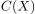
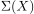
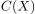
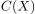
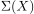
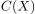
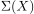
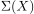
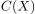
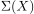

Let be a topological space,  the Cone on . Then the suspension  on is defined
Author: Anton Zakrewski
Email: anton.zakrewski@campus.lmu.de
 be a topological space,  the Cone on
be a topological space,  the Cone on  .
Then the suspension  on is defined
be a topological space,  the Cone on .
Then the suspension  on is defined
.
Then the suspension  on is defined
be a topological space,  the Cone on .
Then the suspension  on is defined